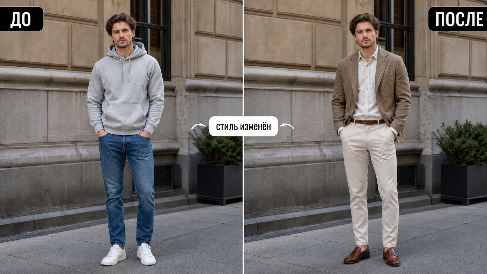

Промтзилла
Этот сценарий нужен, когда хочется примерить не конкретную вещь, а весь образ: деловой, вечерний, streetwear, минимализм или другой стиль.

Пошаговая инструкция
- 1Выбери фото, где человек хорошо виден и одежда не закрыта сумкой, руками или мебелью.
- 2Загрузи изображение в инструмент редактирования фото онлайн.
- 3Опиши желаемый стиль: деловой, casual, old money, streetwear, вечерний или минимализм.
- 4Попроси сохранить лицо, позу, фон и пропорции тела.
- 5Проверь, чтобы образ выглядел цельно: обувь, верх, низ и аксессуары должны сочетаться.
Пример результата
На обложке показан сценарий до/после: исходное фото и результат, который можно получить через инструмент редактирования фото онлайн.
Промт
RU
Измени стиль одежды человека на фото. Новый стиль: [укажи стиль: деловой, old money, streetwear, вечерний, минимализм, casual]. Важно: — меняй только одежду, обувь и уместные аксессуары; — сохрани лицо, волосы, фигуру, позу, руки, фон и освещение; — одежда должна сидеть естественно и соответствовать пропорциям тела; — подбери цельный образ: верх, низ, обувь, фактура ткани и цветовая гамма; — не добавляй логотипы, надписи и слишком заметные бренды; — не меняй возраст, черты лица и выражение. Сделай результат реалистичным, как настоящую фотографию в новом образе.
EN
Change the clothing style of the person in the photo. New style: [specify the style: business, old money, streetwear, evening, minimal, casual]. Important: — change only clothing, shoes, and suitable accessories; — preserve face, hair, body shape, pose, hands, background, and lighting; — clothing should fit naturally and match body proportions; — create a cohesive outfit: top, bottom, shoes, fabric texture, and color palette; — do not add logos, text, or obvious brands; — do not change age, facial features, or expression. Make the result realistic, like a real photograph in a new outfit.
Важно
Смена стиля может красиво показать направление, но не заменяет стилиста и примерку. Проверяй, чтобы ИИ не изменил лицо, фигуру или руки.
Теги